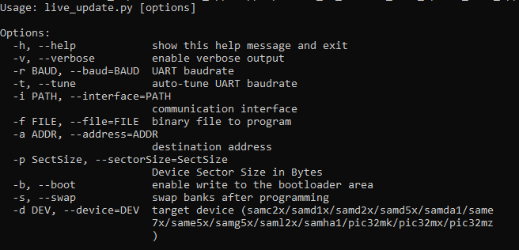

Live update on PIC32MZ Embedded Connectivity with FPU (EF) Starter Kit
Description:
The Live update application uses the dual bank flash feature available on the PIC32MZ Microcontrollers (MCUs). The banks on PIC32MZ MCU are named as BANK1 and BANK2. At any point of time, the application considers the bank on which it is currently executing from as active bank while the other bank is marked as inactive bank. The dual bank flash enables programming the inactive bank with a new version of the firmware while running the current version of the firmware from the active bank.
The application updates the new version of the firmware to the inactive bank while the current version of the firmware runs from the active bank.
The application identifies the flash bank which has the latest version of the firmware (active bank) and toggles a specific LED at a periodic rate. For example, it starts with toggling LED1 and when there is bank swap (active bank changed following successful upgrade), it toggles LED2. Similarly, the process repeats for every successful application firmware update.
Modules/Technology Used:
- Peripheral Modules
- NVM
- CORE TIMER
- UART
- Harmony Core
Hardware Used:
Software/Tools Used:
This project has been verified to work with the following versions of software tools:
- MPLAB Harmony v3 “bsp” repo v3.7.0
- MPLAB Harmony v3 “csp” repo v3.7.1
- MPLAB Harmony v3 “core” repo v3.7.1
- MPLAB Harmony v3 “dev_packs” repo v3.7.0
- MPLAB Harmony v3 “mhc” repo v3.4.0
- MPLAB Harmony v3 “bootloader” repo v3.2.0
- MPLAB Harmony Configurator Plugin v3.5.0
- MPLAB X IDE v5.40
- MPLAB XC32 Compiler v2.41
- Windows command prompt
- Python 2.7
- Any Serial Terminal application like Tera Term terminal application.
Because Microchip regularly update tools, occasionally issue(s) could be discovered while using the newer versions of the tools. If the project doesn’t seem to work and version incompatibility is suspected, It is recommended to double-check and use the same versions that the project was tested with.
Running the Bootloader application:
For the first time, the Live update application is programmed by using either Harmony basic bootloader or Harmony fail-safe bootloader.
- Download the MPLAB Harmony Bootloader package.
- Connect a mini USB cable to the DEBUG port of the PIC32MZ Embedded Connectivity with FPU (EF) Starter Kit.
- Build and program the UART fail safe bootloader (Dual bank bootloader) which is in (path:
<Your Harmony Framework download folder>/bootloader/apps/uart_fail_safe_bootloader/bootloader/firmware/pic32mz_ef_sk.X) using the MPLAB X IDE. - Build the Live update application (path:
<Live Update application folder>/firmware/pic32mz_ef_sk.X) using the MPLAB X IDE but do not program. - From the command prompt, run the bootloader host script “btl_host.py” available at
<Your Harmony Framework download folder>/bootloader/tools_archiveto program the application binary.python <Your Harmony Framework download folder>/bootloader/tools_archive/btl_host.py -v -s -i <COM PORT> -d pic32mz -a 0x9D100000 -f <Live Update application folder>/firmware/pic32mz_ef_sk.X/dist/pic32mz_ef_sk/production/pic32mz_ef_sk.X.production.bin- Note: If you need to know more information on the bootloader host script, refer Help for setting up the host script available at
<Your Harmony Framework download folder>/bootloader/doc/help_bootloader.chm
- Following screenshot shows successful programming of the application binary.
- The messages “Swapping Bank And Rebooting and Reboot Done” in below screenshot signifies that bootloading is successful.
Running the Live update application:
- Perform “Running the Bootloader application” steps mentioned above, if not done already.
- If the above step is successful, then LED3 on the PIC32MZ Embedded Connectivity with FPU (EF) Starter Kit should turn ON.
- Reset or Power cycle the device.
- Run the host script “live_update.py” for live update application from command prompt available at
<Live Update application folder>/scriptsto program the new version of the firmware to an inactive panel while the current version of the application is being run from the active panel.- 
- The following screenshot shows the example output of firmware programming.
- LED1 or LED2 should start blinking which indicates the application is running from BANK 1 or BANK 2 based on from where the program is running.
- LED1 for BANK 1
- LED2 for BANK 2
- In case of any error during the Live update the LED3 turns OFF. Follow the below steps recover from the error,
- Press and hold the Switch SW1 to reset the system then repeat the step 4 to program the Live update application.
- or
- Reset or Power cycle the device and repeat from the step 4 to program the Live update application.
Comments:
- Reference Application Note: Live Update application on PIC32MZ MCUs using MPLAB Harmony v3
- This application demo builds and works out of box by following the instructions above in “Running the Demo” section. If you need to enhance/customize this application demo, you need to use the MPLAB Harmony v3 Software framework. Refer links below to setup and build your applications using MPLAB Harmony.
Revision:
- v1.0 released demo application